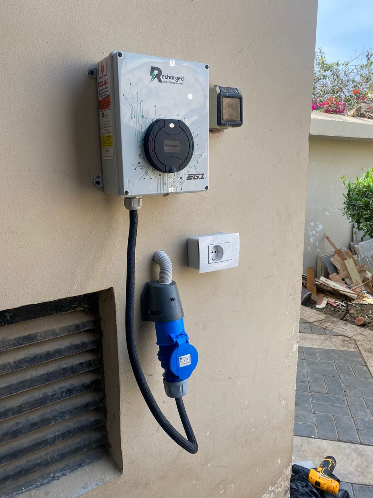
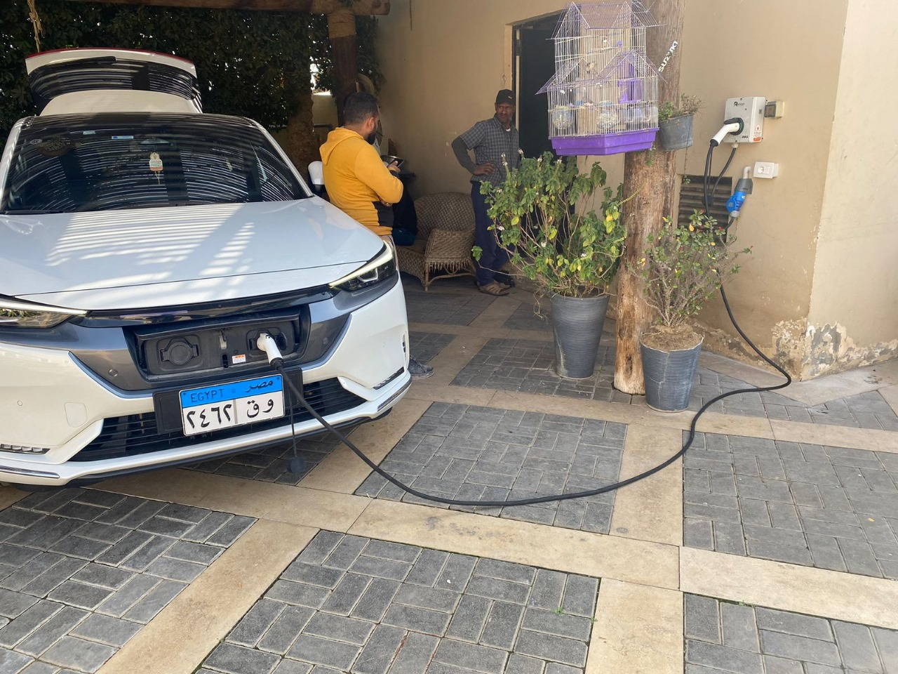
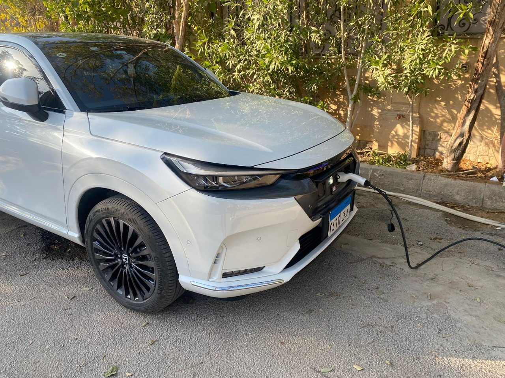
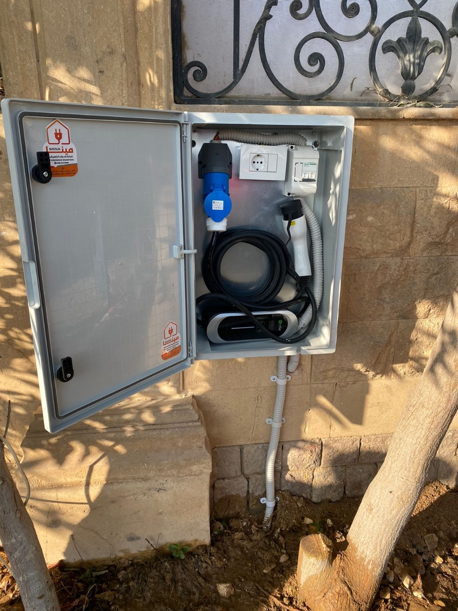

طفره كهربائية في سوق السيارات المصرية

- بدأت الدول العربية الانطلاق لنشر ثقافة استخدام السيارات الكهربائية؛ وعلى رأسهم مصر لتتمكن من اللحاق بالتوجه العالمي نحو طاقة نظيفة ضمن مساعي مكافحة الاحتباس الحراري الذي تسببه انبعاثات الوقود، وربما ساهمت أزمة عدم توافر الوقود وغلاء أسعاره في هذا التوجه خصوصا في السوق المصري.
- يمتلك محمد محمود، سيارة كهربائية منذ شهر نوفمبر 2022 و يقول انها سيارة من طراز (فولكس أي دي 4) تمثل له توفير الوقت و راحة البال و المال أيضا ، لا يواجه مع هذه السيارة نفس مشاكل سيارات البنزين من صيانات زيت و فلاتر ، و لكن فقط تحتاج لتربيط عفشه كل 20 الف كيلو ، و توفر أيضا من حيث الاستهلاك فأنه كان يمون تانك البنزين 100% بقيمة 400 جنيه مصري كل ثلاث ايام بينما يشحن السيارة الكهربائية 100% بقيمة 60 جنيه مصري كل ثلاث أيام أيضا، يستطيع ان يتنقل بالسيارة بسهوله و يسافر لمسافات طويلة عن السابق لأنه اصبح متوفر نقط شحن في معظم طرق السفر، و يضيف الي انه يستطيع ان يشحن سيارته في منزله بفضل الشاحن الذي مكنه من اضافته و توفيره في جراج المنزل يوفر عليه أيضا الذهاب لمحطات البنزين، و ينصح بشراء السيارات الكهربائية فأنها موفره حتي في ثمنها عن مثيلتها البنزين.
- لكن هناك رأي اخر بالنسبة لنقط الشحن على طرق السفر فتقول منة الله علي انها تمتلك سيارة كهربائية من ماركة (هوندا إي إن بي) و بحكم عملها فأنها تسافر كثيرا و قابلها ازمة نقط الشحن السريع فقالت " بحكم شغلي بسافر كثير و لكن بسيارتي البنزين خوفا من قلة نقط الشحن علي الطرق السريعة لكني اتمني ان اسافر بسيارتي الكهربائية لأنها اوفر بكثير" و اضافت انها كانت تعتمد في السابق علي سيارتها البنزين من طراز (اودي ايه3) و لاحظت الفرق بينها و بين السيارة الكهربائية من حيث التوفير و الراحة و التكنولوجيا مقابل القيمة السعرية ،و ذكرت انها تقيم في مدينة الشيخ زايد و مكان عملها بالتجمع مما كان يزودها من أعباء بسبب أسعار البنزين فمثلا في السابق كانت تملى تنك البنزين 100% كل خمس أيام بقيمة 600 جنية لكن في الهوندا الكهربائية تشحن البطارية كل خمس أيام بقيمة 120 جنية و هذا ما اثار دهشتها فأنها موفرة لدرجة كبيرة.
/d/Masar/repo/Masar - واضافت ان طريق عملها يبعد عن المنزل بحوالي 60 كيلو ويستهلك ذلك من البطارية حوالي 18%، اما عن المصاريف الإضافية فأنها لا تحتاج ذلك لان السيارة الكهربائية لا تحتاج صيانات مثل السيارة البنزين، وتحدثت أيضا عن محطة الشحن الخاصة وتكلفتها مقارنة بالبنزين ومصاريف الصيانة فهي اوفر بكثير.
- أوضح أحمد زين، رئيس لجنة الطاقة النظيفة بشعبة السيارات باتحاد الغرف التجارية المصرية وصاحب معارض "إليانس"، أن سوق السيارات الكهربائية لها شعبية في السوق المصري في الوقت الحالي، خصوصاً بعد أن ساعدت الحكومة المصرية في التسهيلات لهذا السوق.
- وأكد على وجود طفره احدثتها السيارات الكهربائية في السوق المصري مشابه بظهور السيارات الأوتوماتيكية في بداية ظهورها، وأن المستهلك المصري يستوعب حاليا وجود السيارات الكهربائية، وان اي منتج من الطبيعي ان يكون له مقاومة في البداية. لكن حاليا لها شعبية كبيرة وأصبحت منافساً قويا للسيارات البنزين وهذه المرحلة الأولي من بداية سنه 2018 وهو بداية الحراك الفعلي لوجود السيارات الكهربائية وتسمي ايضاً بمرحله الوعي لحل أزمات السيارات البنزين من حيث ارتفاع أسعارها وظاهرة الأوفر برايس والارتفاع المتزايد للبنزين وأزمات الاستيراد، كل هذا عزز من مكانة السيارات الكهربائية في السوق المصري علي انها بديل قوي وموفر ومقارنة مع السيارات البنزين فأنها تصل اي نصف سعرها من نفس الماركة.
- وأضاف زين انها توفر ايضاً مصاريف الصيانة الدورية فأنها لا تحتاج إلى نفس الصيانة، وزاد هذا الوعي بدايتاً من سنة 2020 وتضاعف 300% في سنة 2023 ومتوقع الزيادة في سنة 2024 إلى 1000% خصوصاً مع الارتفاع المتزايد لسعر البنزين.
- وتتميز ايضاً السيارات الكهربائية عن البنزين من حيث التكنولوجيا الموجودة داخل السيارة فأنها توفر جميع المزايا، وزيادة على هذا فأنها صديقة للبيئة وهذا ما يسعي إليه العالم الفترة المقبلة، ومتوقع اختفاء السيارات البنزين من سنة 2030 إلى سنة 2050 وتسعي الحكومة المصرية لتعديل البنية التحتية لتناسب هذا التغيير الذي سوف يحدث الفترة المقبلة ليتوفر في كل مكان محطات شحن قريبة للمستهلك في كل مكان، وحاليا يوجد 500 نقطة شحن تغطي الجمهورية موفرة من الحكومة.
- وأشار زين علي ان لكل فئة سعريه يوجد "نجمه" لهذه الفئة، مثالا فئة تحت المليون جنيه يوجد سيارة "بي واي دي سيجل" شبيهة السيارة "بيكانتو"، وفئة فوق المليون جنيه يوجد "هوندا وفولكس أي دي 4" وفوق الاثنين مليون يوجد "تيسلا ومرسيدس".
- لا يقتصر الامر على استيراد السيارات الكهربائية، بل تشهد المنطقة العربية حركة باتجاه تصنيعها.
- وكانت مصر قد استوردت في يوليو 2021، 13 سيارة كهربائية من نوع "إي70" لتجربتها في الشوارع المصرية؛ بهدف إنتاج مثلها في العام التالي 2022 في شركة النصر لصناعة السيارات بنسبة تصنيع محلي 58%.
- وأرجعت مصر توقف المفاوضات مع الشركة الصينية المصدرة لعدم التوصل الي اتفاق على تخفيض سعر المكون المستورد بصورة كافية للسيارات الكهربائية المصرية، تُمكن النصر للسيارات من إنتاج السيارة وطرحها بسعر تنافسي.
- يسعي صندوق مصر السيادي الي التعاون مع "هندوغا" الهندية بصفته شريكاً تكنلوجياً لنقل التكنولوجيا المتخصصة في السيارات الي القاهرة.
- يهدف التعاون الي إقامة مصنع بطاقة إنتاجية تصل الي 6 الاف سيارة في مجال السيارات الكهربائية والديزل، بالتعاون مع شركة النصر للسيارات، وفق ما اطلعت علية منصة الطاقة المتخصصة.
- وتعمل شركة النصر على انتاج 3 أنواع من السيارات الاولي تعمل بالكهرباء والثانية هجين بين الكهرباء والبنزين والثالثة تعمل بالبنزين، من اجل الوصول الي انتاج السيارات الكهربائية في إطار مواكبة الاقتصاد الأخضر والحفاظ على البيئة.
- أوضح ريمون سوريال، صاحب شركة "مينا جروب" لأنشاء محطات شحن السيارات الكهربائية، انه يوفر إقامة محطة شحن خاصة لمالك السيارة الكهربائية ليسهل علية عملية شحن السيارة في أي وقت واستغلال وقت النوم في شحن السيارة فهذا يوفر ويسهل الكثير من الوقت والمجهود: وقال "مثل الهاتف تأكد قبل ان تذهب الي النوم انه على الشاحن لتجنب أي أزمات صباحا وانطلق في أمان".
- وأضاف انه لا يوجد قلق من احمال الشاحن على كهرباء المنزل " تعامل مع السيارة مثل الهاتف المحمول لا يسبب أي اذي ".
- ولا نقلق أيضا من الانتقال الي شرائح اعلي في استهلاك الكهرباء لو استهلاك المنزل للكهرباء طبيعي وغير مرتفع أقصى شريحة هي "6".
- تكلفة الشاحن نفسه تتراوح ما بين 15 ألف الي 60 ألف فهي تناسب المستهلك الذي لديه جراج خاص او عداد المنزل الكهربائي قريب من السيارة، ومن لم يتوفر عنده ذلك يستطيع ان يستخدم محطات الشحن العامة فهي الان متوفرة في معظم الأماكن و بها شحن سريع تستطيع ان تشحن خلال ثلث ساعه و بعض المحطات تشحن خلال 50 دقيقة، انه حقا الشاحن المنزلي يوفر وقت اكثر لكن أيضا ليس من المرهق الشحن في المحطات العامة، يجب فقط ان يكون متوفر للسيارة الكابل الخاص بها للشحن او المحول لتتم عملية الشحن، و لكن أيضا بعض محطات الشحن توفر الكابل الخاص بها.
- ذكر سوريال أيضا انه يجب اختيار الشاحن المناسب للسيارة للحفاظ علي عمر البطارية، وان ذلك يختلف علي حسب وحدة تحكم الشحن بالسيارة تستقبل عدد كيلو وات معين، فهناك سيارة تستقبل 7 او 11 او22 من الكيلو وات، وينصح باختيار الشاحن الذي يعطي 22 كيلو وات في الساعة فهو مناسب لاي سيارة لربما تم تغيير السيارة لأخري او وجود أكثر من سيارة في نفس المنزل مختلفين.
- لمحطات الشحن العامة km gamوأكد على كلام سوريال، عمرو السيد صاحب شركة ويوعد المستهلك الفترة المقبلة بان محطات الشحن سوف تغطي الجمهورية، وذلك بوعد من الدولة بانها سوف تستمر في إصلاحات البنية التحتية، وهذه من خطط التنمية التي تهتم بها مصر في الفترة الحالية، وأضاف ان محطات الشحن العامة هي من النوع "دي سي" ذات الشحن السريع خلال ثلث ساعة او 50 دقيقة، ومحطات الشحن الخاصة من النوع "اية سي" تشحن بين متوسط 6 ساعات الي 9 ساعات وذلك للحفاظ على الأمان في المنازل ولتحمل قوة الضغط.
- وبفضل الخطوات الواعدة من الدولة في هذا القطاع، بتهيئة البنية التحتية الكافية لاستيعاب عدد أكبر من هذه السيارات أصبح المستهلك يستخدم السيارات الكهربائية بكل ثقة، وتنجح الخطة بان عالم بدون تلوث ويستمر التغيير، وقريبا سوف يتم الاعتماد على هذه المركبات كبديل دائم عن السيارات القائمة على مشتقات النفط.